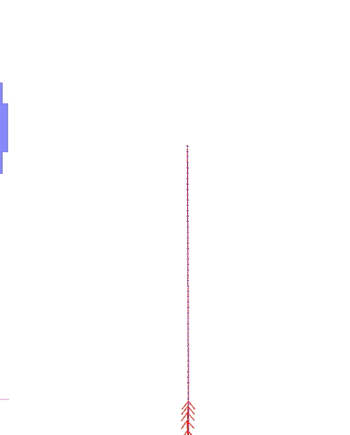
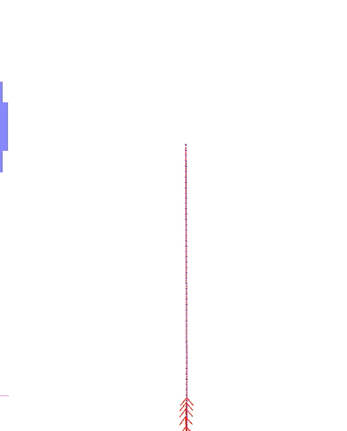

Galactic到Humble [校准@fish]
从ROS2 Galactic到Humble，稳定性改进添加我们不会具体地址。 [校准@fish]
Smac规划器的主要改进 [校准@fish]
在2D和混合-A*的实施中，Smac规划器得到了显著改进，使得路径更好、更快、质量更高。 [校准@fish]
碰撞检查拒绝碰撞更快查询costmap坐标少 [校准@fish]
零拷贝冲突检查对象
预计算碰撞检查足迹方向所以不需要trig在运行 [校准@fish]
仅当机器人处于可能的内切区域时才检查完整的SE2足迹 [校准@fish]
计算可能的内切区域，或部分足迹可能与边界碰撞的成本，以检查全部足迹。否则，检查中心成本，因为承诺不会处于潜在的碰撞状态 [校准@fish]
将混合-A*planner重命名为Smac规划器混合 [校准@fish]
预计算的Reedshepp和杜宾路径脱机所以在运行只是查找表 [校准@fish]
用一种新的、新颖的、被称为障碍启发式的启发式方法代替波前启发式方法。这计算了一个Dijkstra的路径，考虑了8个连接的空间，以及在引导启发式进入过道中心的位置的成本权重。它还对costmap进行下采样，这样它可以将扩展次数减少75%，并且通过关闭单细胞距离的部分距离，在启发式算法中引入一个非常小的误差。 [校准@fish]
改进解析展开算法可能性循环的路径，尽可能去除 [校准@fish]
改进分析扩展以提供最大路径长度以防止靠近障碍物的踢脚线 [校准@fish]
2DA*旅行成本和启发式改进，以加快计划时间并显著提高路径质量 [校准@fish]
用定制的梯度下降实现取代了平滑器 [校准@fish]
摘要共同事业planners成utils文件 [校准@fish]
调整成本函数
预计算障碍启发式动态规划扩大最少节点数 [校准@fish]
缓存启发式设置启用25hz规划速率缓存障碍启发式值目标保持不变 [校准@fish]
利用dubin和芦苇绵羊空间的对称性将缓存大小减少50%，以增加可用于启发式查找的窗口大小。 [校准@fish]
所有定向箱的预计算原语 [校准@fish]
Smac规划器2D参数现在可重构 [校准@fish]
混合A*和状态栅格规划现在都完全可以接受 [校准@fish]
混合-A*和状态晶格对路径平滑进行了参数化读取。 [校准@fish]
平滑器现在启用了运动学上可行的边界条件。 [校准@fish]
State Lattice supports turning in place primitive types [校准@fish]
- 这些改进的是:
做了额外的改进，包括一个 analytic_expansion_max_length 参数，这样分析扩展的潜在长度是有限的。如果长度太远，则拒绝此扩展。这防止了不安全的捷径进入远离目标本身的高成本区域，让搜索在分析扩展将其带回家之前接近的工作。这绝不应该小于使用的最小转弯半径的4-5倍，否则计划时间将开始增加。 [校准@fish]
此外，如果您有先前存在的配置，则遍历成本和启发式成本计算已更新，需要重新调整惩罚函数。算法的默认值也被适当地重新调整为与以前相似的盒子行为的变化 (作为参考)。 [校准@fish]
简单 (Python) 控制命令 [校准@fish]
这个 This PR 介绍新包Nav2，称为 nav2_simple_commander 。它是一套功能对象， BasicNavigator ，可用于构建Nav2供电自治任务Python3不含关于自己Nav2，ROS 2，或Action服务器细节。它包含一个简单API以普通类型 (主要 PoseStamped ) 和处理所有实现细节后面的引擎盖。例如，这是一个简易导航任务使用此API: [校准@fish]
def main():
rclpy.init()
navigator = BasicNavigator()
# Set our demo's initial pose
initial_pose = PoseStamped()
... populate pose ...
navigator.setInitialPose(initial_pose)
# Wait for navigation to fully activate
navigator.waitUntilNav2Active()
# Go to our demos first goal pose
goal_pose = PoseStamped()
... populate pose ...
navigator.goToPose(goal_pose)
while not navigator.isNavComplete():
feedback = navigator.getFeedback()
... do something with feedback ...
# Basic navigation timeout
if Duration.from_msg(feedback.navigation_time) > Duration(seconds=600.0):
navigator.cancelNav()
result = navigator.getResult()
if result == NavigationResult.SUCCEEDED:
print('Goal succeeded!')
elif result == NavigationResult.CANCELED:
print('Goal was canceled!')
elif result == NavigationResult.FAILED:
print('Goal failed!')
这个 The full API can be found in the README of the package 。在之前的链接中，也可以在包的源代码中找到许多注释良好的示例和演示。 [校准@fish]
减少节点和执行程序
为了nav2充分利用ROS 2，我们需要减少节点执行者在nav2，可以提高性能。 [校准@fish]
这个功能已经在 the ticket #816 中讨论过了，并且在 [校准@fish]
延长BtServiceNode处理服务结果 [校准@fish]
这个 PR addresses this Ticket ，并增加了一个虚拟的 on_completion() 功能到 BtServiceNode 类 ( here )。与已经存在的虚拟 on_wait_for_result() 函数类似，它可以在子类中被覆盖，以便通过一些用户定义的操作对相应的事件做出反应。添加的 on_completion() 功能将在 BtServiceNode 的服务交互成功完成后调用。 [校准@fish]
/**
* @brief Function to perform some user-defined operation upon successful
* completion of the service. Could put a value on the blackboard.
* @return BT::NodeStatus Returns SUCCESS by default, user may override to return another value
*/
virtual BT::NodeStatus on_completion()
{
return BT::NodeStatus::SUCCESS;
}
返回的 “BT:: nodestatus” 将设置BT节点的当前状态。由于函数可以访问服务的结果，因此返回的节点状态可以依赖于这些服务结果，例如。 BtServiceNode 的正常行为不受引入 on_completion() 功能的影响，因为如果服务交互成功完成，默认实现仍然简单地返回 “bt::NodeStatus:: success”。 [校准@fish]
包括新旋转垫片控制器插件 [校准@fish]
这个 PR 介绍新 nav2_rotation_shim_controller 。该控制器将检查粗糙标题差别关于机器人和新收到路径。如果内门槛，将请求传递到主控制器执行。如果是外面的门槛，控制器将旋转机器人的路径标题。一旦它在公差范围内，它就会将控制执行从这个旋转垫片控制器传递到主控制器插件上。此时，机器人仍然是旋转，允许电流插件采取控制平滑切换到路径跟踪。 [校准@fish]
旋转垫片控制器适用于: [校准@fish]
在Gazebo产生机器人 [校准@fish]
这个 PR 删除pkg nav2_gazebo_spawner 内nav2_bringup目录。而不是 nav2_gazebo_spawner 节点 spawn_entity.py 的 gazebo_ros 是推荐产卵机器人凉亭。请注意 [校准@fish]
恢复行为超时
Nav2中的恢复，旋转和备份，现在有 time_allowance 端口在BT节点请求字段行动指定超时。这有助于确保机器人在被卡住或无法在合理的时间段内备份全部距离的情况下，能够退出备份或旋转的原始行为。 [校准@fish]
新参数 use_final_approach_orientation 3 2D规划器 [校准@fish]
这个 ` PR <https://github.com/ros-planning/navigation2/pull/2488>`_ 添加新参数 use_final_approach_orientation 3 2Dplanners (θ *，Smac规划器2D和NavFn)， false 默认。如果 true ，pose的路径生成planner将方向设置为方法取向，即方向矢量连接最后两点的路径。它允许发送机器人位置 (x，y) 而不是姿势 (x，y，θ) 有效忽略目标取向。例如，下面，同一目标的取向指出左屏幕， use_final_approach_orientation=false (左) 和 use_final_approach_orientation=true (右) [校准@fish]
 

{kind=link}
Smac规划器2D和Theta*: 修复被忽略的目标方向 [校准@fish]
忽略目标姿态方向的 This PR fixes the issue (最终路径姿态方向始终设置为0)。 [校准@fish]
动态参数变更检测的变更与修复行为 [校准@fish]
这个 https://github.com/ros-planning/navigation2/pull/2576 and this PR 修改方法抓变化动态参数。动机是解决问题 ''void on_parameter_event_callback(const rcl_interfaces: 味精: ParameterEvent: SharedPtr事件) ”呼吁各参数变化每节点导致有害参数变化如果2不同节点的参数名称。 [校准@fish]
动态参数
新增动态参数:
BTAction节点异常更改 [校准@fish]
当BT操作节点由于网络或操作服务器故障而引发异常时，它们现在返回 FAILURE 的状态代码，以使行为树中的特定操作失败以做出反应。这与从网络引发的异常发送到根树的先验相反，根树将被视为任务级故障，树无法对此做出反应。 [校准@fish]
删除运动学限制RPP
参数 max_linear_accel 和 max_linear_decel 与引起不稳定性的控制器中的运动限制一起被移除。相反，如果您想要类似的行为，请使用ROS生态系统中可用的速度平滑器。 [校准@fish]
删除使用方法速度缩放参数在RPP [校准@fish]
参数 use_approach_linear_velocity_scaling 删除赞成总是帮助光滑过渡目标。 这个 PR 实现。 [校准@fish]
将AMCL运动模型重构为插件 [校准@fish]
这个 PR 为AMCL目前使用的不同运动模型创建插件。此功能使用户能够使用任何自定义运动模型，方法是将其创建为插件，并将robot_model_type参数更改为nav2_params.yaml文件中插件的名称。这有助于使用自定义运动模型，而无需修改AMCL源代码。 [校准@fish]
Fix CostmapLayer clearArea invert param logic [校准@fish]
This PR fixes the invert paramlogic of the CostmapLayer clearArea fonction. Hence correcting the behavior of the clearAroundRobot and clearExceptRegion services and their corresponding BT actions. [校准@fish]
Dynamic Composition [校准@fish]
This PR provides a optional bringup based on ROS2 dynamic composition for users. It can be used to compose all Nav2 nodes in a single process instead of launching these nodes separately, which is useful for embedded systems users that need to make optimizations due to harsh resource constraints. it's used by default, but can be disabled by using the launch argument use_composition:=False. [校准@fish]
Some experiments to show performance improvement of dynamic composition, and the cpu and memory are captured by psutil : [校准@fish]
The way of dynamic composition consumes lower memory(saves ~70%), and lower cpu (saves ~13%) than normal multiple processes. [校准@fish]